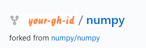

Setting up git for NumPy development¶
To contribute code or documentation, you first need
git installed on your machine
a GitHub account
a fork of NumPy
Install git¶
You may already have git; check by typing git --version. If it’s
installed you’ll see some variation of git version 2.11.0.
If instead you see command is not recognized, command not
found, etc.,
install git.
Then set your name and email:
git config --global user.email you@yourdomain.example.com
git config --global user.name "Your Name"
Create a GitHub account¶
If you don’t have a GitHub account, visit https://github.com/join to create one.
Create a NumPy fork¶
Forking has two steps – visit GitHub to create a fork repo in your
account, then make a copy of it on your own machine.
Create the fork repo¶
Log into your GitHub account.
Go to the NumPy GitHub home.
At the upper right of the page, click
Fork:
You’ll see
and then you’ll be taken to the home page of your forked copy:

Make the local copy¶
In the directory where you want the copy created, run
git clone https://github.com/your-user-name/numpy.git
You’ll see something like:
$ git clone https://github.com/your-user-name/numpy.git Cloning into 'numpy'... remote: Enumerating objects: 12, done. remote: Counting objects: 100% (12/12), done. remote: Compressing objects: 100% (12/12), done. remote: Total 175837 (delta 0), reused 0 (delta 0), pack-reused 175825 Receiving objects: 100% (175837/175837), 78.16 MiB | 9.87 MiB/s, done. Resolving deltas: 100% (139317/139317), done.
A directory
numpyis created on your machine. (If you already have a numpy directory, GitHub will choose a different name likenumpy-1.)$ ls -l total 0 drwxrwxrwx 1 bjn bjn 4096 Jun 20 07:20 numpy
Give the name
upstreamto the main NumPy repo:cd numpy git remote add upstream https://github.com/numpy/numpy.git
Set up your repository so
git pullpulls fromupstreamby default:git config branch.master.remote upstream git config branch.master.merge refs/heads/master
Look it over¶
The branches shown by
git branch -awill includethe
masterbranch you just cloned on your own machinethe
masterbranch from your fork on GitHub, which git namedoriginby defaultthe
masterbranch on the the main NumPy repo, which you namedupstream.
master remotes/origin/master remotes/upstream/master
If
upstreamisn’t there, it will be added after you access the NumPy repo with a command likegit fetchorgit pull.The repos shown by
git remote -v showwill include your fork on GitHub and the main repo:upstream https://github.com/numpy/numpy.git (fetch) upstream https://github.com/numpy/numpy.git (push) origin https://github.com/your-user-name/numpy.git (fetch) origin https://github.com/your-user-name/numpy.git (push)
git config --listwill includeuser.email=your_email@example.com user.name=Your Name remote.origin.url=git@github.com:your-github-id/numpy.git remote.origin.fetch=+refs/heads/*:refs/remotes/origin/* branch.master.remote=upstream branch.master.merge=refs/heads/master remote.upstream.url=https://github.com/numpy/numpy.git remote.upstream.fetch=+refs/heads/*:refs/remotes/upstream/*
Optional: set up SSH keys to avoid passwords¶
Cloning your NumPy fork repo required no password, because it read the remote repo without changing it. Later, though, submitting your pull requests will write to it, and GitHub will ask for your username and password – even though it’s your own repo. You can eliminate this authentication without compromising security by setting up SSH keys .
If you set up the keys before cloning, the instructions above change slightly. Instead of
git clone https://github.com/your-user-name/numpy.git
run
git clone git@github.com:numpy/numpy.git
and instead of showing an https URL, git remote -v will show
origin git@github.com:your-user-name/numpy.git (fetch)
origin git@github.com:your-user-name/numpy.git (push)
If you have cloned already and want to start using SSH, see Switching remote URLs from HTTPS to SSH .